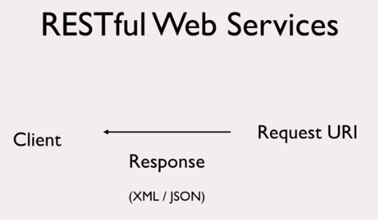

What is REST ?
When you request the resource for server then server will return the data in json/xml or other format.
Mostly client for restful api happens to be browser .So, sending the data in JSON format to those http client will be easy to convert it to a javascript object .So json is better.
Mostly client for restful api happens to be browser .So, sending the data in JSON format to those http client will be easy to convert it to a javascript object .So json is better.
Response for the message looks like this:This XML and JSON are the representation of resource present on server. So, called Representational.
When you make REST API calls you are sending or recieving representation of resources. Different representation has different formats even though underlying resources are same.
So , here we are transferring representational state of resource present from server to client in JSON or XML format. So , REST is called as RepresentationalState Transfer. So ,we send or recieve the representation of resource .
As server send data in Json / xml format but how the client knows which format in which data is send by server.
Suppose client ask for XML but say server only knows json so , Server send data in json format . Then how client knows that data is in JSON?
Actually this type of message information will be written in http header as content type. So client look at content type then found that server sends in JSON format. Then Client can parse the data accordingly.

Class of Status Code
| 2XX | Status | Description |
| 200 | OK | Successful Response |
| 201 | Created |
Created Successful resource creation. Say using Post we have created a resource the 201 Request is received |
| 204 | No Content |
Use when you donot need to send content back. When you send the delete request then you donot have any thing to send back so just send 204 status or empty message body |
| 3XX | Status | Description (Send by server saying donot ask me ,just ask to other url because it is redirecting) |
| 304 | Not Modified |
|
| 5XX | Status | Description |
| 500 | Internal Server Error |
Suppose when you send a request and resource not found then we get 404 not found. |


| 4XX | Status | Description |
| 400 | Bad Request |
Server couldnot interprete and understand the request, probably syntax error in request message |
| 404 | Not Found | This error most commonly occures when users manually enter an incorrect url into a browser or web server admisnistrator removes a file withour redirecting the address to a valid new location. Users must change thier URL to fix this problem. |
| 401 | UnAutherized | This error happens when a website visitor tries to access a restricted web page but isn't authorized to do so,usually because of a failed login attempt. |
| 403 | Forbidden |
Similar to 401 error , but note the difference between unauthorized and forbidden. In this case no login opportunity was available. This can for example happen if you try to access a forbidden directory on a website. |
Note: We would like to point out that all the error messages above are errors reported by the web server back to visitor ( that is nature of HTTP errors, they came from the web server you are accessing).
Needless to say , if you can't accesss a website at all, for eg. if its network (or yours ) is down, you won't get an HTTP error back . Your connection attempt with simply time out.